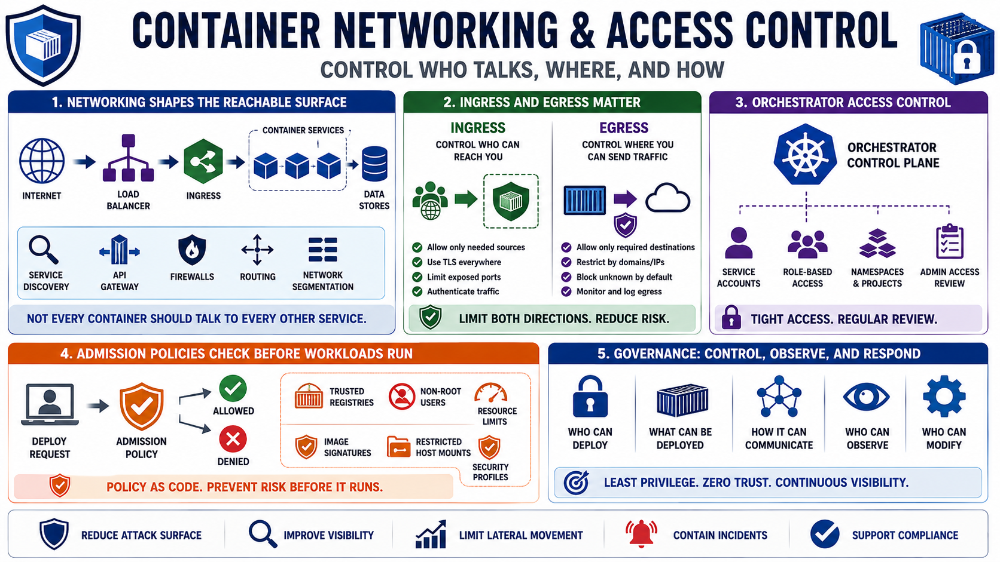

Network, Orchestration, and Access Control
Connecting to LMS... Progress: in progress

Narration
Container networking determines which services, networks, and endpoints workloads can communicate with. Exposed ports, service discovery, ingress, egress, API gateways, and load balancers all shape the reachable surface. A secure design does not assume every container should talk to every other service. Network policies, at a high level, help express allowed communication paths and reduce unnecessary lateral reach.
Ingress and egress deserve equal attention. Ingress controls who can reach a service from outside or from other workloads. Egress controls where a workload can send traffic. Egress is often overlooked, but it matters for data protection, dependency control, and incident containment. A compromised or malfunctioning workload should not have unlimited network freedom by default.
Orchestrator access control is critical because orchestrators can deploy, modify, inspect, connect to, and remove workloads. Service accounts, role-based access concepts, namespace or project boundaries, and administrative access review all matter. A user or workload with broad orchestrator permissions may be able to read secrets, change images, expose services, or observe sensitive application behavior.
Admission policy concepts add another layer of control by checking deployment requests before workloads run. Policies may require trusted registries, non-root users, resource limits, approved image signatures, or restricted host mounts. The broader principle is governance: control who can deploy, what can be deployed, how it can communicate, and who can observe or modify it after release.